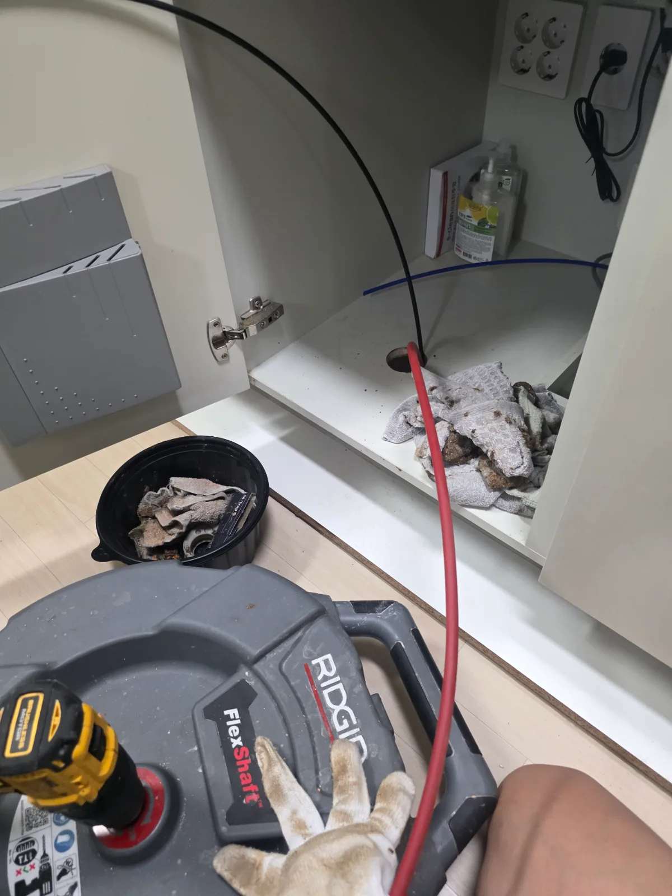
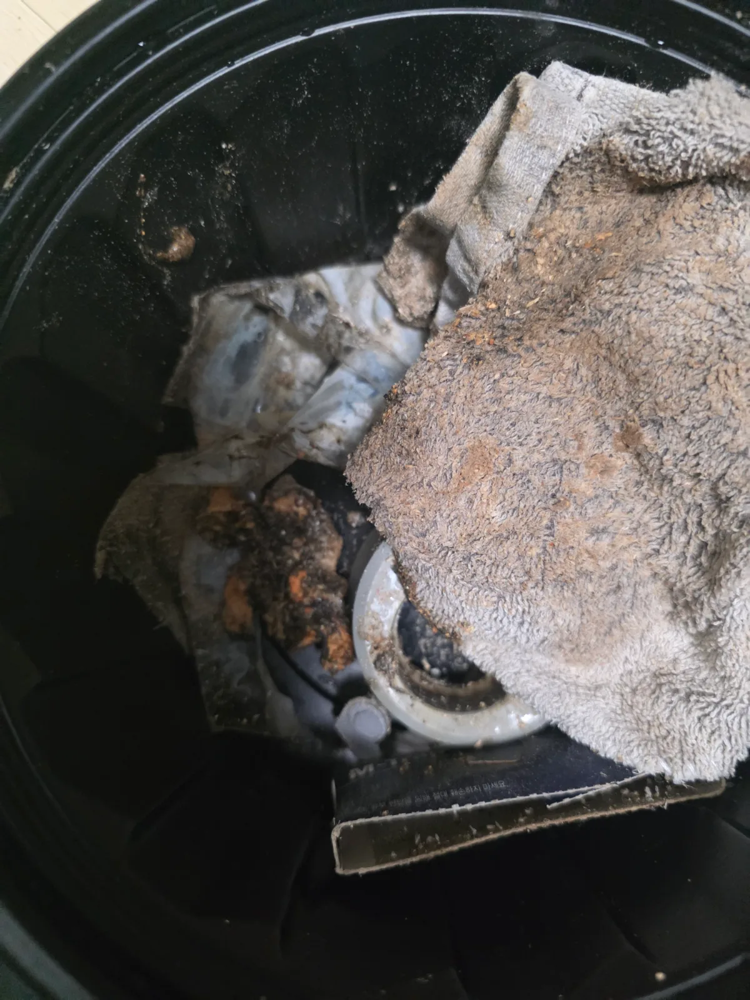

화성시 청계동 싱크대막힘, 현장 도착 후 진단
화성시 동탄 청계동 싱크대막힘 요청을 접수한 신라건축설비는 리지드 플렉스샤프트와 배관 점검 장비를 준비해 신속하게 현장으로 출동했습니다. 숙련된 싱크대막힘 전문 기술자가 물 빠짐 상태와 싱크대 하부 배수 구조를 확인한 결과, 배수구 입구나 주름관만 청소해서 해결할 수 있는 단순 막힘이 아니었습니다. 연결 배관 안쪽에 기름때와 오염물이 축적돼 물의 흐름을 제한하는 상태로 판단하고 배관스케일링 작업을 진행하기로 했습니다.
1단계: 증상 확인과 필요한 장비 작업
먼저 싱크대 하부의 물품을 안전하게 이동시키고 배수 연결부를 분리해 배관 내부로 장비를 투입할 수 있는 작업구를 확보했습니다. 배관 방향과 굴곡 구조를 점검한 뒤 리지드 플렉스샤프트를 천천히 진입시켰습니다. 샤프트에서 전달되는 저항을 확인하며 기름때가 집중적으로 쌓인 구간을 찾고, 배관을 손상시키지 않도록 회전 속도와 전진 깊이를 조절했습니다.

2단계: 원인 구간 처리와 정상 작동 확인
충전 전동드릴과 연결된 리지드 샤프트를 회전시키면서 배관 벽면에 단단하게 굳은 기름때와 음식물 슬러지를 구간별로 분쇄했습니다. 중앙에 작은 물길만 만드는 단순 관통에 그치지 않고 배관 벽면의 오염층을 긁어내 내부 단면을 넓히는 배관스케일링 방식으로 작업했습니다. 분쇄된 오염물과 잔존 이물질을 배관 밖으로 배출하고 작업 구간을 반복적으로 정리했습니다. 이후 배수 연결부를 원상 복구하고 충분한 양의 물을 흘려보내 배수 속도와 역류 여부, 연결 부위의 누수 상태를 확인했습니다.

작업 결과와 재발 방지 안내
리지드 플렉스샤프트 작업으로 싱크대 배수관 내부의 굳은 기름때와 슬러지를 제거한 뒤 물이 정체되지 않고 원활하게 배출되는 것을 확인했습니다. 싱크대막힘을 예방하려면 식용유나 기름기가 많은 국물을 배수구로 직접 흘려보내지 않고, 음식물 거름망을 사용해야 합니다. 기름때는 차가운 배관 벽면에 달라붙어 점차 단단해지므로 배수 속도가 느려지거나 꿀렁거리는 소리와 악취가 발생할 때 조기에 점검하는 것이 좋습니다.
신라건축설비는 화성시 동탄과 청계동을 비롯한 경기 전 지역 및 서울 전 지역에 신속하게 출동하여 싱크대막힘·하수구막힘·변기막힘을 전문적으로 해결합니다. 현장 상태에 따라 석션, 관통, 배관 내시경검사, 리지드 샤프트 배관스케일링과 고압세척 등 적합한 공법을 선택합니다. 단순한 생활 막힘부터 공용배관과 오수관 진단, 배관 보수·교체 및 대형 배관공사까지 자체적으로 대응할 수 있습니다.
최종 조치: 싱크대 하부 배수 연결부를 분리하고 리지드 플렉스샤프트를 배관 안쪽으로 투입했습니다. 회전하는 샤프트 체인으로 배관 벽면에 굳은 기름때와 음식물 슬러지를 분쇄·제거한 후 충분한 물을 흘려보내 정상적인 배수 상태를 확인했습니다.
현장 방문 전 확인하는 비용과 작업 범위
신라건축설비는 현장 증상과 배관 구조를 확인한 뒤 필요한 작업과 예상 비용을 안내합니다. 단순 관통으로 해결되는지, 배관내시경·석션·고압세척 또는 추가 장비가 필요한지는 현장 상태에 따라 달라집니다. 출장비와 야간 작업비, 추가 장비 비용이 발생할 수 있는 경우 작업 전에 먼저 설명하고 동의를 받은 범위에서 진행합니다.
업체를 선택할 때 확인할 사항
무조건적인 ‘0원’ 표현보다 실제 작업 범위, 추가 비용 조건, 사용 장비와 사후 대응 기준을 확인하는 것이 중요합니다. 해결되지 않았을 때의 비용 기준과 작업 후 동일 증상 발생 시 점검 범위를 사전에 문의해두면 불필요한 분쟁을 줄일 수 있습니다.
화성시 싱크대막힘 자주 묻는 질문
싱크대 물이 천천히 내려가면 바로 점검해야 하나요?
싱크대에서 사용한 물이 원활하게 내려가지 않고 배수 속도가 점차 느려지는 증상이 나타났습니다. 많은 양의 물을 사용하면 싱크대에 물이 고이거나 하부 배수구 방향으로 다시 올라올 가능성이 있는 상태였습니다.처럼 증상이 나타나더라도 원인은 현장마다 다를 수 있습니다. 장비와 배관 구조를 확인한 뒤 필요한 작업 범위를 안내합니다.
작업 전 비용을 알 수 있나요?
작업 전 증상과 현장 여건을 확인해 예상 범위와 비용을 먼저 안내합니다. 변기 탈거, 장비 추가 투입 또는 공용배관 작업이 필요한 경우 고객 동의 없이 임의로 진행하지 않습니다.
약품으로 해결되지 않으면 어떻게 하나요?
완료 후 정상 작동을 함께 확인하고 작업 범위에 따른 사후 안내를 드립니다. 동일 증상이 반복되면 현장 기록을 기준으로 원인을 다시 점검합니다.
싱크대막힘 서울·경기 출동지역
신라건축설비는 화성시 청계동 현장을 포함해 서울 25개 구와 경기도 31개 시·군의 배관 문제를 상담합니다. 현장 거리와 기사 배정 상황에 따라 출동 가능 여부를 먼저 안내드립니다.
서울 전 지역
강남구 · 강동구 · 강북구 · 강서구 · 관악구 · 광진구 · 구로구 · 금천구 · 노원구 · 도봉구 · 동대문구 · 동작구 · 마포구 · 서대문구 · 서초구 · 성동구 · 성북구 · 송파구 · 양천구 · 영등포구 · 용산구 · 은평구 · 종로구 · 중구 · 중랑구
경기도 주요 출동지역
수원시 · 용인시 · 고양시 · 화성시 · 성남시 · 부천시 · 남양주시 · 안산시 · 평택시 · 안양시 · 시흥시 · 파주시 · 김포시 · 의정부시 · 광주시 · 하남시 · 광명시 · 군포시 · 양주시 · 오산시 · 이천시 · 안성시 · 구리시 · 의왕시 · 포천시 · 양평군 · 여주시 · 동두천시 · 과천시 · 가평군 · 연천군